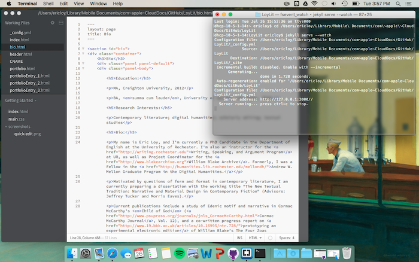
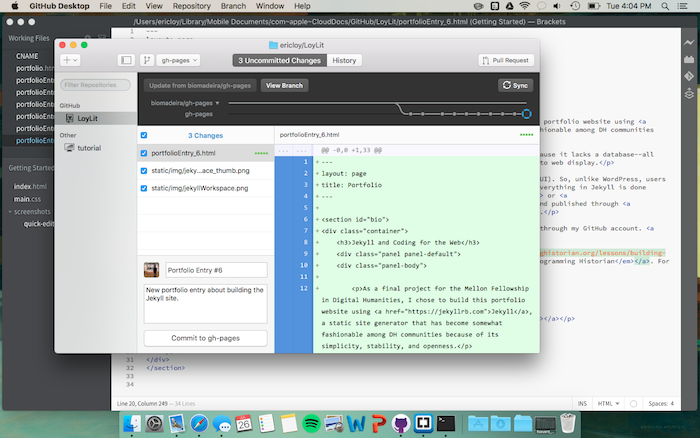
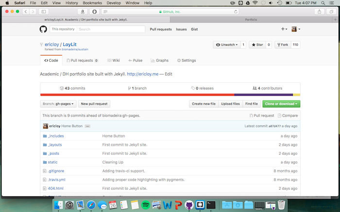

<section id="bio">
<div class="container">
    <h3>Jekyll and Coding for the Web</h3>
    <div class="panel panel-default">
    <div class="panel-body">
        
        <p>As a final project for the Mellon Fellowship in Digital Humanities, I chose to build this portfolio website using <a href="https://jekyllrb.com">Jekyll</a>, a static site generator that has become somewhat fashionable among DH communities because of its simplicity, stability, and openness.</p>
            
        <p>Jekyll is different from other website generators or content management systems (CMS) because it lacks a database--all pages are coded individually in a text editor and Jekyll simply converts coded text files into web display.</p>
        
        <p>The primary challenge of working with Jekyll is that it lacks a graphic user interface (GUI). So, unlike WordPress, users can't access a visual dashboard or create pages and posts in an attractive word processor. Everything in Jekyll is done through the terminal, a text/code editor like <a href="http://brackets.io">Adobe Brackets</a> or <a href="http://www.barebones.com/products/textwrangler/">TextWrangler</a>, and usally shared and published through <a href="https://github.com">GitHub</a> and <a href="https://pages.github.com">GitHub Pages</a>.</p>
        
        <p>Because of the GitHub intergration, the source code for this website is always available through my GitHub account. <a href="https://github.com/ericloy/LoyLit">Check it out!</a></p>
        
        <p>Lastly, this project could not have been completed without the <a href="http://programminghistorian.org/lessons/building-static-sites-with-jekyll-github-pages">spectacular tutorial by Amanda Visconti on <em>The Programming Historian</em></a>. For anyone interested in building a Jekyll site, they should start there!</p>
        
        <p>Below are a few screenshots of my workflow for the website.</p>
        
        <hr/>
   
        <p><a href="static/img/jekyllWorkspace.png"></a></p>
        
        <p><a href="static/img/jekyllWorkspace2.png"></a></p>
        
        <p><a href="https://github.com/ericloy/LoyLit"></a></p>
        
    </div>    
    </div>    
</div>    
</section>

